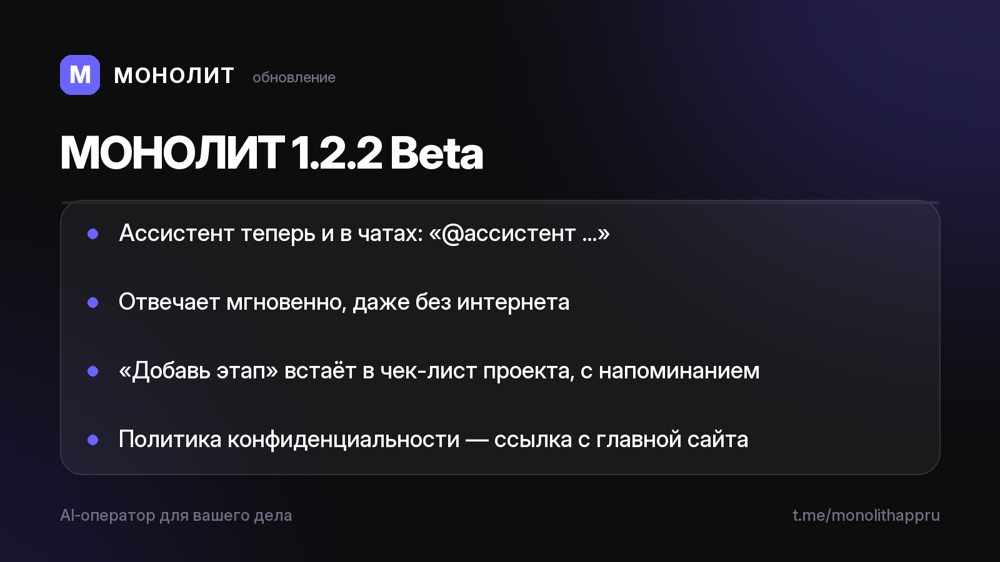

Дневник разработки · 03.07.2026
МОНОЛИТ 1.2.2 Beta — ассистент пришёл в чаты

🤖 Теперь оператора можно позвать прямо в переписке команды: напишите в любом чате «@ассистент сколько активных заказов» или «@ассистент доход за месяц» — ответ приходит мгновенно, отдельным сообщением, и виден всем участникам. Работает даже без интернета: быстрые вопросы к базе решаются на устройстве, переписка в нейросеть не уходит.
📋 «Добавь этап Цветокоррекция в НеоСферу к 20 июля» — этап встаёт в чек-лист существующего проекта с напоминанием. Раньше такая фраза могла создать лишний заказ, теперь ассистент понимает разницу между «создай» и «добавь».
🌐 Сайт дополнен: политика конфиденциальности теперь в один клик с главной, появились карточки про чаты по проектам и резервную копию.
Хотите пощупать бету на Android? Напишите @sbphotoshoter — пришлю APK.
МОНОЛИТ — учёт заказов, клиентов и денег одной фразой. Windows и Android, бесплатная бета.
Скачать Читать канал